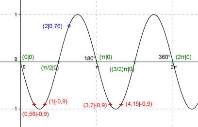

Aufgabe 140 Ergänzen Sie die Wertetabelle für x zwischen 0 und 2π: y = sin -2x x 2 0,56 oder 1 oder 3,7 oder 4,15 y 0,76 -0,9 Amplitude = 1 ; Periode = 2π/2 = π Berechnung der Nullstellen: sin (-2x) = 0 --> sin (-2x) = -sin 2x (Spiegelung an der x-Achse) --> Substitution 2x = u --> sin u = 0 --> u = k * π mit k = 0, 1, 2, ... --> Rücksubstitution liefert 2x = k * π |:2 --> x = k * π/2 N1 liegt bei 0 oder 0°, N2 bei π/2 oder 90°, N3 bei π oder 180°, N4 bei (3/2)π oder 270° oder N5 bei 2π oder 360°.  Funktionswert an einer Stelle x ermitteln: x = 2 f(2) = sin (-2 * 2) = sin (-2 * 114,6°) = 0,76 gerundet. Berechnung der x-Werte für y = f(x) = -0,9: f(x) = 0,9 eingesetzt, existiert zweimal zwischen 0 und π/2 bzw. 0° und 90° und zweimal zwischen π und (3/2)π bzw. 180° und 270° (siehe Graph). sin (-2x) = -0,9 --> -2x = arc sin (-0,9) = -1,12 --> x = 0,56 gerundet, --> x1 = 0,56 oder x22 = (π/2 - 0,56) = 1 oder x3 = (π + 0,56) = 3,7 oder x4 = ((3/2)π - 0,56) = 4,15 gerundet und α1 = 32,1° oder α2 = 57,9° oder α3 = 212,1° oder α4 = 237,9°.